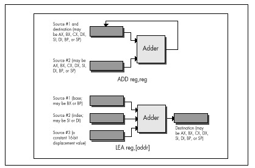
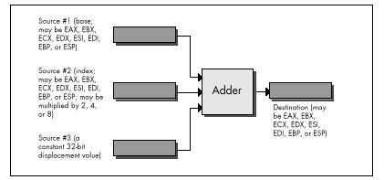

| Previous | Table of Contents | Next |
The two approaches are functionally interchangeable but not equivalent from a performance standpoint, and which is better depends on the particular context. If it’s a one-shot memory access, it’s best to let the processor perform the addition; it’s generally faster at doing this than a separate ADD instruction would be. If it’s a memory access within a loop, however, it’s advantageous on the 8088 CPU to perform the addition outside the loop, if possible, reducing effective address calculation time inside the loop, as in the following:
add bx,si
LoopTop:
mov al,[bx]
inc bx
loop LoopTop
Here, MOV AL,[BX] is two cycles faster than MOV AL,[BX+SI].
On a 286 or 386, however, the balance shifts. MOV AL,[BX+SI] takes no longer than MOV AL,[BX] on these processors because effective address calculations generally take no extra time at all. (According to the MASM manual, one extra clock is required if three memory addressing components, as in MOV AL,[BX+SI+1], are used. I have not been able to confirm this from Intel publications, but then I haven’t looked all that hard.) If you’re optimizing for the 286 or 386, then, you can take advantage of the processor’s ability to perform arithmetic as part of memory address calculations without taking a performance hit.
The 486 is an odd case, in which the use of an index register or the use of a base register that’s the destination of the previous instruction may slow things down, so it is generally but not always better to perform the addition outside the loop on the 486. All memory addressing calculations are free on the Pentium, however. I’ll discuss 486 performance issues in Chapters 12 and 13, and the Pentium in Chapters 19 through 21.
You’re probably not particularly wowed to hear that you can use addressing modes to perform memory addressing arithmetic that would otherwise have to be performed with separate arithmetic instructions. You may, however, be a tad more interested to hear that you can also use addressing modes to perform arithmetic that has nothing to do with memory addressing, and with a couple of advantages over arithmetic instructions, at that.
How?
With LEA, the only instruction that performs memory addressing calculations but doesn’t actually address memory. LEA accepts a standard memory addressing operand, but does nothing more than store the calculated memory offset in the specified register, which may be any general-purpose register. The operation of LEA is illustrated in Figure 6.1, which also shows the operation of register-to-register ADD, for comparis on.
What does that give us? Two things that ADD doesn’t provide: the ability to perform addition with either two or three operands, and the ability to store the result in any register, not just in one of the source operands.
Imagine that we want to add BX to DI, add two to the result, and store the result in AX. The obvious solution is this:
mov ax,bx add ax,di add ax,2
(It would be more compact to increment AX twice than to add two to it, and would probably be faster on an 8088, but that’s not what we’re after at the moment.) An elegant alternative solution is simply:
lea ax,[bx+di+2]
Likewise, either of the following would copy SI plus two to DI
mov di,si add di,2
or:
lea di,[si+2]
Mind you, the only components LEA can add are BX or BP, SI or DI, and a constant displacement, so it’s not going to replace ADD most of the time. Also, LEA is considerably slower than ADD on an 8088, although it is just as fast as ADD on a 286 or 386 when fewer than three memory addressing components are used. LEA is 1 cycle slower than ADD on a 486 if the sum of two registers is used to point to memory, but no slower than ADD on a Pentium. On both a 486 and Pentium, LEA can also be slowed down by addressing interlocks.

Figure 6.1 Operation of ADD Reg,Reg vs. LEA Reg,{Addr}.
LEA really comes into its own as a “super-ADD” instruction on the 386, 486, and Pentium, where it can take advantage of the enhanced memory addressing modes of those processors. (The 486 and Pentium offer the same modes as the 386, so I’ll refer only to the 386 from now on.) The 386 can do two very interesting things: It can use any 32-bit register (EAX, EBX, and so on) as the memory addressing base register and/or the memory addressing index register, and it can multiply any 32-bit register used as an index by two, four, or eight in the process of calculating a memory address, as shown in Figure 6.2. Let’s see what that’s good for.
Well, the obvious advantage is that any two 32-bit registers, or any 32-bit register and any constant, or any two 32-bit registers and any constant, can be added together, with the result stored in any register. This makes the 32-bit LEA much more generally useful than the standard 16-bit LEA in the role of an ADD with an independent destination.

Figure 6.2 Operation of the 32-bit LEA reg,[Addr].
But what else can LEA do on a 386, besides add?
It can multiply any register used as an index. LEA can multiply only by the power-of-two values 2, 4, or 8, but that’s useful more often than you might imagine, especially when dealing with pointers into tables. Besides, multiplying by 2, 4, or 8 amounts to a left shift of 1, 2, or 3 bits, so we can now add up to two 32-bit registers and a constant, and shift (or multiply) one of the registers to some extent—all with a single instruction. For example,
lea edi,TableBase[ecx+edx*4]
replaces all this
mov edi,edx shl edi,2 add edi,ecx add edi,offset TableBase
when pointing to an entry in a doubly indexed table.
Are you impressed yet with all that LEA can do on the 386? Believe it or not, one more feature still awaits us. LEA can actually perform a fast multiply of a 32-bit register by some values other than powers of two. You see, the same 32-bit register can be both base and index on the 386, and can be scaled as the index while being used unchanged as the base. That means that you can, for example, multiply EBX by 5 with:
lea ebx,[ebx+ebx*4]
Without LEA and scaling, multiplication of EBX by 5 would require either a relatively slow MUL, along with a set-up instruction or two, or three separate instructions along the lines of the following
mov edx,ebx shl ebx,2 add ebx,edx
and would in either case require the destruction of the contents of another register.
Multiplying a 32-bit value by a non-power-of-two multiplier in just 2 cycles is a pretty neat trick, even though it works only on a 386 or 486.
|
The full list of values that LEA can multiply a register by on a 386 or 486 is: 2, 3, 4, 5, 8, and 9. That list doesn’t include every multiplier you might want, but it covers some commonly used ones, and the performance is hard to beat. |
I’d like to extend my thanks to Duane Strong of Metagraphics for his help in brainstorming uses for the 386 version of LEA and for pointing out the complications of 486 instruction timings.
| Previous | Table of Contents | Next |